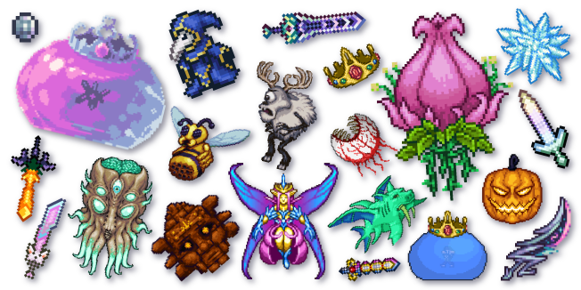

October 03, 2026 by Jawayne Giscombe

When people hear "Terraria," they usually say, "Oh, it's just Minecraft in 2D." I used to think so too, but after hundreds of hours, I can say that's not true. You start with nothing. You spawn with a copper pickaxe, an axe, and a shortsword.
Within the first night you're chopping trees, building a shelter, and hoping a zombie doesn't wreck your house. Everything after that is your own choice. Progression is a puzzle. Every boss unlocks new materials, and those materials
unlock new gear. Beating the Eye of Cthulhu leads to better ores.
Those ores lead to the Wall of Flesh, which opens the whole second half of the game. It's a chain of dependencies, and as a Computer Science student, I can't help noticing it works a lot like debugging. You find the blocker, work out what
you need to get past it, and try again until it works. The community keeps it alive. The game has been getting updates for years, and players keep inventing new ways to play: challenge runs, huge custom maps, and mods that change the
game completely. There's always something new to try. It teaches patience. I've lost entire worlds to lava, died to bosses more times than I'd like to admit, and rebuilt bases from scratch. Each time I learned something. The lesson
is the same one I'm learning in my coding courses: failing is part of getting better. If you haven't tried Terraria, give it a shot. And if you already play, tell me your favorite boss fight in the comments.
5 Early-Game Terraria Tips I Wish I'd Known Sooner
October 5, 2026 by Jawayne Giscombe
My first few Terraria worlds ended the same way: I'd dig a hole, get lost in a cave, and die to something I never saw coming. After a lot of restarts, here are the lessons that finally helped.

- Build your house before the first night. Zombies and the Eye of Cthulhu show up in the dark, so you need shelter early. A basic house needs walls, a door, a light source, a table, and a chair. Once it's built, NPCs will move in, and
the Guide can show you what you can craft with the items in your inventory.
- Get NPCs to move in. The Merchant arrives once you've collected some coins, and the Nurse shows up after you've boosted your max health. Each NPC needs its own room, so building a small town pays off quickly. The Nurse can heal you
for a price, and the Merchant sells useful supplies.
- Dig for Life Crystals and light sources. Exploring caves is how you find Life Crystals, which permanently raise your max health. Bring plenty of torches. Digging in the dark is how I lost half of my early characters.
- Don't fight bosses unprepared. The Eye of Cthulhu is a classic first challenge. Build a flat arena, stock up on healing potions, and have better armor than you think you need. Rushing in is how most of my deaths happened.
- Dig a straight tunnel to explore safely. Many players dig a straight shaft down to the bottom of the world, known as a "hellevator."
Terraria rewards curiosity, and it doesn't punish mistakes for long. You respawn, grab your gear, and try again with more knowledge.
If you have a tip I missed, email me at jawaynegiscombe@gmail.com.